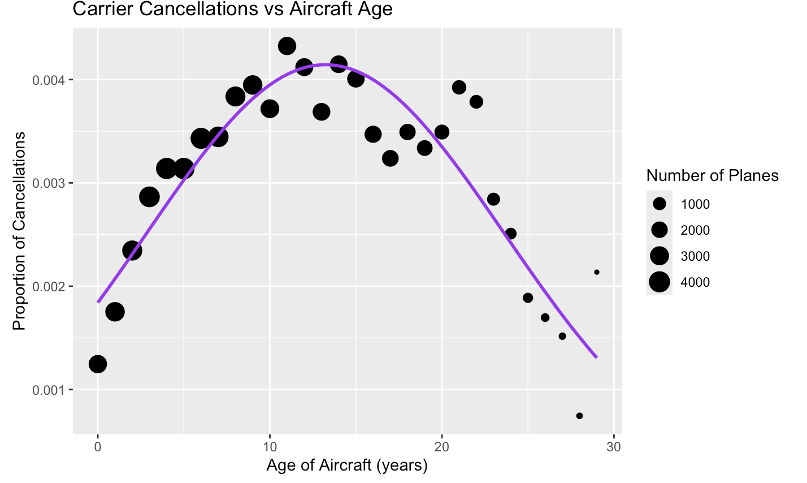
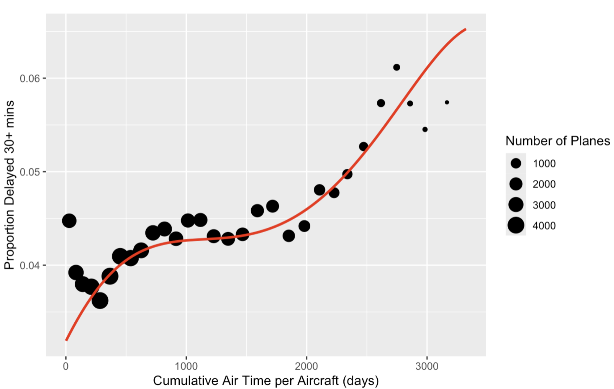

Abstract
This study investigates the role of aircraft age and usage in contributing to flight disruptions, particularly carrier delays and carrier cancellations, among domestic U.S. flights. While weather and air traffic are external causes, mechanical issues, often linked to aging, are internal and potentially predictable. We hypothesize that aging aircraft, through accumulated wear and maintenance demands, are more prone to causing disruptions, and this relationship can be quantified through historical flight data.
To evaluate this, we used "The Sky's the Limit" dataset covering all U.S. domestic flights since 1995 and joined it with FAA aircraft registration data. We computed cumulative totals for each aircraft's number of flights (FLIGHTS), distance traveled (DISTANCE), and total airtime (AIR_TIME) to create usage-based age proxies, along with manufacture-year-based AGE. These four variables were then analyzed through correlation and regression tests to predict three key outcomes: the proportion of flights with any carrier delay, the proportion of delays over 30 minutes, and the proportion of flight cancellations.
The analysis revealed that delays over 30 minutes followed an S-shaped relationship with AGE: as planes aged, delays increased sharply, plateaued, and rose again after about 15 years. In contrast, cancellations exhibited an inverted-U pattern: they increased with age and declined beyond a certain point. Noted that this was partially influenced by fewer aircraft in older age bins, which reduced reliability in the trend's tail.
These patterns suggest that maintenance is a major contributor to flight disruptions or lack thereof. Industry literature supports this, noting increased maintenance demands beginning at year 7 and mandatory FAA Aging Aircraft Inspections beginning at year 14. Planes operating reliably at very old ages tend to be corporate, multi-engine aircraft with superior maintenance regimes and set flight routes, reinforcing the role of targeted upkeep in mitigating disruptions.
Introduction
Per the FAA, 2.9 million passengers are served on 45,000 flights across the United States Domestic flights every day. 20-25% of these flights are predicted to be delayed, with a 1-2% cancellation rate. Several factors may account for delays, most notably weather, air traffic congestion, and mechanical issues with the plane. While the status of a plane does not influence weather and air traffic congestion, mechanical problems may be explained through plane age, as wear from normal usage of the plane may incur increased amounts of maintenance. Thus, this research project aims to investigate the relationship between plane age and plane mishaps.
With all of this in mind, we will endeavor to answer the question: Which of our predictor variables is the most accurate for predicting whether an aircraft will be delayed by at least thirty minutes?
Methods
Source
We used two sources for our data:
Bureau of Transportation Statistics (BTS) Flight Data, gathered by the Airline Service Quality Performance (ASQP) program. This program gathers information reported by airlines and is used to monitor and analyze airline performance across the country. The data contained in this program includes:
- Flight Numbers
- Tail Numbers
- Scheduled and Actual Departure and Arrival Times
- Delays and their (rough) Causes
- Cancellations
- Flight Distances
- Airtime
Federal Aviation Administration (FAA) Aircraft registry, comprised of self-reported data. Civil aircraft in the United States must be registered with the FAA. This database focuses on the individual aircraft, including:
- Tail Numbers
- Manufacture Year
- Aircraft Model
- Aircraft Owner
Data Wrangling
This project uses The Sky's the Limit dataset, which contains data for all domestic flights since 1987. This data did not use any random sampling as it represents all commercial flights across the USA. This dataset might not be generalizable to the rest of the world because the aviation landscape may look different in the United States compared to elsewhere. Additionally, FAA plane registration data has been joined via tail number association to calculate the manufacture date for each aircraft. Again, this data sampled from every aircraft registered in the United States. Therefore, it represents the U.S. but may not be generalizable to other countries.
Cleaning data was minimal, as The Sky's the Limit data contained no missing values. However, as it provided a single flight per row, the dataset needed to be reorganized to track a plane's age. A plane's tail number is a 5-character code, providing a unique identifier for an aircraft, and it is provided as variable 'Tail_Number'. This variable would be used to track the status of a single plane, allowing us to analyze the trends of planes over their lifetime. Joining data from a single tail number for each calendar year was in service and provided a reorganized dataset that displayed a unique year and tail number per row. This allowed us to reduce the size of the datasets we were using extensively. Three variables were selected for airplane age proxy measurements from this dataset: flights, distance, and airtime.
Flights reported the total count of flights a plane over its commission. Distance reported the total distance in miles that the plane had flown. Airtime reported the total time spent in minutes that a plane was in the air. By joining all flights within the same year for each tail number, the variables of interest (flights, distance, and airtime) were summed into yearly totals. These variables represented the usage of the airplanes but did not represent the actual age of the planes. Therefore, aircraft registration data from the FAA website was left joined to this dataset to provide the manufacture year of the aircraft, allowing the variable 'AGE' to be calculated as the current year minus the manufacture year. Finally, the mishap measuring variables were added to the data, using the previous method of joining per year for each tail number. Valid flight mishap measurements include 'Carrier_Cancellation' and 'Carrier_Delay'.
Parquet Files Use
We used Parquet files to efficiently download entire years of flight data at once directly off of the Skys the Limit website rather than retrieving each month individually. By using the select function, we were able to extract only the variables relevant to our analysis, improving both speed and memory usage.
Adding Proportions
Proportions were calculated for planes out of total flights that were delayed more than thirty minutes, and this ratio was added to the dataset as a new variable. This proportion would show the number of flights delayed per year per tail number. Thirty minutes was used as the cutoff for significant delays and thus was used in the delay ratio. Also, a ratio for cancellations was created to display the proportion of flights canceled per year per tail number. This proportion used carrier cancellations divided by flights for a plane.
Four Ages
We used four different metrics to represent the age of a given aircraft. These included AGE (years since manufacture), AIRTIME (total hours flown), DISTANCE (total miles traveled), and FLIGHTS (number of journeys involving a takeoff and landing). Occasionally in our analysis, we also considered FLIGHTS_ANNUAL (number of flights per year), which provided additional insights into usage patterns over time.
Correlation tests were conducted between each of the four age metrics and the proportion of flights delayed by more than 30 minutes. We then developed a multivariable regression model using all four age variables to predict this delay ratio. A second multivariable regression model was created to examine how these same variables predicted the ratio of cancelled flights.
Multicollinearity
A correlation test was done between annual flights and age in years since manufacture.
Multicollinearity was a concern for the tests done with four (or five) ways to look at age in the model looking at delays. The Variance Inflation Factor (VIF) needed to be calculated to determine if any of our ages are collinear (distance and airtime have similar scatterplots). We were looking for a VIF over 5 to be too high. The VIF for both Distance and Air Time was astronomical. The two variables were highly correlated and could skew the model's results. They were combined into one variable for the model, and then the multicollinearity was tested again.
The multivariable regression model with the proportion of canceled flights as the dependent variable was created with Distance and Air time combined, and then that model was also tested for collinearity.
Logistic Modelling
Logistic modeling was used to estimate the probability of a plane mishap given values for the four-age metrics. This type of regression would allow us to create a prediction model that uses age metrics to predict the probability that a flight would be delayed or canceled. To correctly perform the model, data needed to be reorganized to allow rows to represent individual flights rather than each year for a tail number with a binary value for delay or cancellation. Rather than redownloading parquet file data, a reasonable approximation would be made that would require less computing power. Each tail number by year row would be cloned based on the number of flights in a row. Then, for the delayed column, the number of rows with binary positive delay value would be added based on the number of delays over 30 minutes a plane had in a year. This same process was used for cancellations.
Given the significant increase in data, we needed to decrease our rows in a way that helped answer our research question. Our primary focus on planes is on airport-based flights; therefore, certain commercial airline registration types were more relevant and filtered for the dataset. Furthermore, several different types of planes existed, and we filtered for multi-engine planes as they are the most common commercial airplane type. However, logistic regression models still could not run, given the mass of data. Therefore, we filtered for manufacturing years from 2008-2014. This choice was made because it allowed all planes to have 10 years of use, and we could not go before 2008 because the delay type was not previously recorded.
Results
Correlation Tests
Correlation tests were done with the 4 ways to look at age (years since manufacture, total flights, total airtime, and total distance traveled) and the proportions of planes delayed by more than 30 minutes. It was determined that MFR age (years since manufacture) was the age variable with the most statistically significant effect on the response variable because it had a very small p-value. The r/correlation value is 0.28 (strong values are near 1.0). The effect that this age value had on the delays was moderate.
In looking at the effects of the different ages on delays of more than 30 minutes, there was a statistical outlier in the Hawaiian Airlines aircraft because their planes flew many more total flights than any other aircraft.
Hawaiian Aircraft Outliers
As mentioned, several visualizations revealed some outlier planes with much greater flight counts than other airplanes. Further investigation revealed that these outliers were planes flying within the Hawaiian Islands. These numerous short flights allowed them to keep other variables at a normal level while accumulating many more flights than planes on other routes. Since these airplanes had such different usage trends from the rest of the data, we decided to remove them because we assumed they would skew our data.
Multivariable Regression
Multivariable regression was conducted with the four age variables together (looking at flights both annually and cumulatively). The four age variables were confirmed to be statistically significant because they all have very small p-values. However, we needed to assess the relative strength of their impact as predictor variables.
Logistic Regression
Initial logistic regression models were surprising for both delays and cancellations. Airtime and distance had large coefficients, which is likely caused by their large multicollinearity. Thus, we created new models excluding airtime or distance.
Standardized coefficients for the delay predicting model without airtime are as follows:
Intercept = -3.067
Age = -0.028
Flights = 0.217
Distance = -0.028
Coefficients for the delay predicting model that excludes distance are as follows:
Intercept = -3.067
Airtime = -0.034
Age = -0.027
Flights = 0.224
The same approach was used in the canceled model. Coefficients for the canceled model, excluding airtime, are as follows:
Intercept = -5.447
Age = 0.337
Flights = 0.085
Distance = 0.06
Coefficients for the canceled model without distance are as follows:
Intercept = -5.446
Airtime = 0.063
Flights = 0.081
Final Models
AGE
A model was fit for using AGE (years since manufacture) as a predictor variable for the proportion of planes that were delayed by more than 30 minutes.
The instances of aircraft were grouped by age, then plotted by mean delay time and a cubic model was fitted. There was a clear relationship between AGE and aircraft delays.

We also succeeded in fitting a model to the pattern of aircraft cancellations using AGE as a predictor variable, something we were unable to do with the other predictors.
FLIGHTS
A model was fit using FLIGHTS as a predictor variable for the proportion of planes delayed by more than 30 minutes. The instances of aircraft were binned by 1000 planes and then a cubic model was fit on the data.
There were a number of outliers, representing aircraft flying between islands in Hawaii, that skewed the regression line. Removing those outliers from the regression line fit more accurately.

DISTANCE
TODO

AIRTIME
TODO
Discussion
Negative Estimates in the Multiple Regression
It was interesting that some of the estimates from the multiple regression were negative and predicted a decrease in the delay proportion. An interpretation of this finding is the discrepancy in scale for each variable. Airtime was recorded in minutes, but flights were recorded in thousands. The scales of these large numbers may have distorted the model's predictions.
Another option was that some of the variables in the multiple regression model were highly correlated, which was the case when we tested for it.
An additional explanation for this was mathematical. Since multiple regression holds all other variables steady when testing one of them, it appears that the proportion of delays is lowered as distance and annual flights increase in value. This could make sense with the distance variable, as planes with more distance accumulated may be flying fewer, longer flights as opposed to shorter ones more frequently. These planes would have fewer opportunities to encounter delays than planes that took off more frequently. Planes with higher annual flights have a lower proportion of delays, and this may be because they are newer or better maintained. Cumulatively, over the lifespan of an aircraft, more flights have the effect of increasing the proportion of planes delayed by more than 30 minutes very slightly.
The negative correlation coefficient between annual flights and age in years since manufacture (-0.1269567) means that as age increases, annual flights for an aircraft decrease very slightly, and older planes fly less every year.
Multicollinearity in the New Model
In the face of multicollinear variables in our delays model, it was important to reduce conflicts in our variables that could be throwing off our model since we are trying to determine which variable has the most significant impact on delays and cancellations. After combining the Distance and Air Time variables, the VIF for the Flights variable was no longer exceptionally high, so that variable could remain in our model.
We created the cancellation model with the Distance and Air time variables combined and encountered no multicollinearity issues.
Limitations
In this project, we identified clear patterns in the data and fit models to them. However, we are limited in the conclusions we can draw from these models. We have selected and utilized predictor variables that work for our data. However, the data was not collected by a randomized experiment, thus limiting the ability to control for confounding variables in our models and conclusions.
We were also constrained in the level of accuracy we could reach in our investigation into the causes of aircraft delays. If the data were available, we would have employed additional variables containing information about individual aircraft's mechanical status and history.
Conclusion
Each of our independent variables seemed to have some power in predicting aircraft delays. The variables for AIRTIME and DISTANCE had similar effects, as they were highly correlated with each other. We used the BIC() and AIC() functions to compare each of the models we created and found that the model with the lowest BIC value was the one that used DISTANCE as a predictor variable for the proportion of planes that were delayed more than thirty minutes. By this metric, distance flown is the best predictor of aircraft delays. However, we also encountered a real-world argument for aircraft age being the best predictor.
We were able to fit a clean model with the AGE variable for both delays and cancellations, which was challenging to do with other predictors. We also found some research that helped explain our findings.
There is a visible general trend between "AGE" and the proportion of delays over 30 minutes: it increases, plateaus, and then increases again. We attribute this pattern to maintenance demands increasing with aircraft age. According to a study on The Maintenance Costs of Aging Aircraft, Boeing separates an aircraft's age into three stages: the “New” period (0–7 years), the “Mature” period (7–14 years), and the “Aging” period (14+ years). Each stage brings increasing maintenance costs, with the final stage offering diminishing returns to performance.